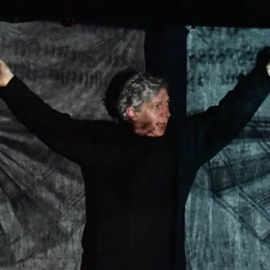

da mar 1 set a gio 10 set
L'Arlecchino Errante 2026
Teatro, spettacoli, performance e laboratori a Pordenone per L’Arlecchino Errante, il festival che porta in scena suoni e sentimenti.
 Indicazioni
Indicazioni
- Costi e prenotazioni
- Costo non indicato · Prenotazione non indicata
- Programma
- Programma raccolto. Gli appuntamenti delle diverse schede sono riuniti in questa pagina.
- In caso di maltempo
- Nessuna indicazione specifica pubblicata.
- Note
- Le schede dei singoli appuntamenti sono state unite nella manifestazione principale.
L’EVENTO
Descrizione completa
Quest'anno l'edizione è storica, dal momento che il festival compirà trent'anni. Si continua sulla linea e la ricerca delle sonorità, e dopo l'edizione passata "Lingue e silenzi", quest'anno arriva "Suoni e sentimenti". Spettacoli, workshop, e performance programmati nelle vie del centro cittadino, presso l'ex convento di San Francesco, presso il Capitol e molti altri luoghi della città di Pordenone. Programma completo. Info festival https://arlecchinoerrante.com/
Organized by: L'Arlecchino Errante - Scuola Sperimentale dell'Attore Tel: +39 3518392425 (info e Prenotazioni) E-mail: festival@arlecchinoerrante.com
Klank Dicht invita il pubblico ad ascoltare consapevolmente il paesaggio sonoro che lo circonda e a partecipare attivamente alla sua creazione. Lettera dopo lettera, suono dopo suono, gli spettatori si immergono sempre più profondamente in un mondo in cui il significato assoluto e la radicale inutilità dell’arte si incontrano.
: € 10 – under 25, over 60, possessori del biglietto intero di uno spettacolo precedente
: € 5 – under 12, soci titolati scuola sperimentale dell’attore, possessori di un biglietto ridotto di uno spettacolo precedente
: € 1 – colleghi teatranti e artisti in genere, disoccupati, persone diversamente abili e possessori di un biglietto super ridotto di uno spettacolo precedente
V.A.D.A. / Austria d i e con Yulia Izmaylova & Felix Strasser Klank Dicht invita il pubblico ad ascoltare consapevolmente il paesaggio sonoro che lo circonda e a partecipare attivamente alla sua creazione. Lettera dopo lettera, suono dopo suono, gli spettatori si immergono sempre più profondamente in un mondo in cui il significato assoluto e la radicale inutilità dell’arte si incontrano. Ingresso: Intero : € 15 Ridotto : € 10 – under 25, over 60, possessori del biglietto intero di uno spettacolo precedente Super Ridotto : € 5 – under 12, soci titolati scuola sperimentale dell’attore, possessori di un biglietto ridotto di uno spettacolo precedente Extra Ridotto : € 1 – colleghi teatranti e artisti in genere, disoccupati, persone diversamente abili e possessori di un biglietto super ridotto di uno spettacolo precedente
PHOTO CREDIT: L'Arlecchino Errante - Scuola Sperimentale dell'Attore
Attraverso il Flamenco dal vivo, si lavorerà su quel ritmo interiore necessario per arrivare alla composizione del personaggio, grazie agli spunti accesi dallo spettacolo
in cui Juan Luis Corrientes e Beatriz Prior hanno unito le loro rispettive competenze in Commedia dell’Arte
e in canto, percussione e danza flamenca, accanto a Julio Castell, chitarrista dello spettacolo. Attraverso i diversi stili del Flamenco, si esploreranno il ritmo e l’emozione propri di ciascuno per costruire il personaggio.
Informazioni e prenotazioni: festival@arlecchinoerrante.com
con Juan Luis Corrientes e Beatriz Prior Attraverso il Flamenco dal vivo, si lavorerà su quel ritmo interiore necessario per arrivare alla composizione del personaggio, grazie agli spunti accesi dallo spettacolo Fetén. Una produzione in cui Juan Luis Corrientes e Beatriz Prior hanno unito le loro rispettive competenze in Commedia dell’Arte e in canto, percussione e danza flamenca, accanto a Julio Castell, chitarrista dello spettacolo. Attraverso i diversi stili del Flamenco, si esploreranno il ritmo e l’emozione propri di ciascuno per costruire il personaggio. Singolo workshop: € 20 Più di un workshop: € 10 Tutti i workshop : € 100 Informazioni e prenotazioni: festival@arlecchinoerrante.com
Elsa Morante: un canto per gli ultimi nasce come un attraversamento appassionato dell’opera e della visione del mondo di una delle voci più radicali del Novecento italiano. In scena, la sua parola diventa materia viva, corpo che pulsa, canto che tenta di dare volto e dignità a tutte le creature marginali che popolano i suoi libri: bambini fragili, madri ferite, amanti senza patria, sognatori incalliti.
Teatro Nucleo / Italia regia e drammaturgia Natasha Czertok con Natasha Czertok, Frida Falvo, Chiara Parolo voci, canti e supervisione musicale Bruno de Franceschi musiche originali e sound design Luca Venturini dramaturgia Michele Pascarella Elsa Morante: un canto per gli ultimi nasce come un attraversamento appassionato dell’opera e della visione del mondo di una delle voci più radicali del Novecento italiano. In scena, la sua parola diventa materia viva, corpo che pulsa, canto che tenta di dare volto e dignità a tutte le creature marginali che popolano i suoi libri: bambini fragili, madri ferite, amanti senza patria, sognatori incalliti. Ingresso: Intero : € 15 Ridotto : € 10 – under 25, over 60, possessori del biglietto intero di uno spettacolo precedente Super Ridotto : € 5 – under 12, soci titolati scuola sperimentale dell’attore, possessori di un biglietto ridotto di uno spettacolo precedente Extra Ridotto : € 1 – colleghi teatranti e artisti in genere, disoccupati, persone diversamente abili e possessori di un biglietto super ridotto di uno spettacolo precedente
IL PROGRAMMA
Programma e orari
Le singole date appartengono alla stessa manifestazione. Ogni sede verificata dispone delle proprie indicazioni.
Martedì 8 settembre · L'arlecchino Errante 30 - Klank dicht
Pordenone · Ex Convento di San Francesco - Chiesa
- V.A.D.A. / Austria di e con Yulia Izmaylova & Felix Strasser Klank Dicht invita il pubblico ad ascoltare consapevolmente il paesaggio sonoro che lo circonda e a partecipare attivamente alla sua creazione. Lettera dopo lettera, suono dopo suono, gli spettatori si immergono sempre…
Martedì 8 settembre · L'arlecchino Errante 30 - La dì che lis pantianis a son sparidis
Pordenone · Ex Convento San Francesco - Chiostro (in caso di pioggia Chiesa)
- Teatri Stabil Furlan / Italia di e con Federico Scridel e Michele Polo Capitolo III della grande storia delle Pantegane in Friuli: questa volta però è finita. Estinti. Basta pantegane. Basta code e dentini che rosicchiano formaggio. Basta Racli, Tramai e Velen, non servono più…
Martedì 8 settembre · L'arlecchino Errante 30 - Open Workshop "Maschera + flamenco = ritmo interiore"
Pordenone · Palazzo Gregoris, sede della Società Operaia di Mutuo Soccorso e Istruzione Corso Vittorio Emanuele, 44
- con Juan Luis Corrientes e Beatriz Prior Attraverso il Flamenco dal vivo, si lavorerà su quel ritmo interiore necessario per arrivare alla composizione del personaggio, grazie agli spunti accesi dallo spettacolo Fetén. Una produzione in cui Juan Luis Corrientes e Beatriz Prior…
Mercoledì 9 settembre · L'arlecchino Errante 30 - Elsa Morante. Un canto per gli ultimi
Pordenone · Ex Convento di San Francesco - Chiesa
- Teatro Nucleo / Italia regia e drammaturgia Natasha Czertok con Natasha Czertok, Frida Falvo, Chiara Parolo voci, canti e supervisione musicale Bruno de Franceschi musiche originali e sound design Luca Venturini dramaturgia Michele Pascarella Elsa Morante: un canto per gli ultimi…
Mercoledì 9 settembre · L'arlecchino Errante 30 - Gli ultimi
Pordenone · Mediateca Cinemazero
- Film di Vito Pandolfi e David Maria Turoldo (1963) Ispirato al racconto autobiografico di Padre David Maria Turoldo, “Gli ultimi” è una delle pietre miliari del cinema etno-antropologico e sociale italiano. Ambientato nel Friuli contadino degli anni ’30, il film racconta con…
Mercoledì 9 settembre · L'arlecchino Errante 30 - Open Workshop "Spiare gli embrioni che cantano"
Pordenone · Casa della Musica E. Imelio Piazza della Motta, 4
- con Serena Di Biasio e Federico Scridel, Yulia Izmaylova e Felix Strasser, Miha Nemec e con i musicisti di Zerorchestra Didier Ortolan, Alessandro Turchet, Luigi Vitale Ovvero quello che c’è prima della nascita di un evento sperimentale tra Suoni, Parole e Sentimenti.…
Mercoledì 9 settembre · L'arlecchino Errante 30 - Transborder reading
Pordenone · Auditorium Casa della Musica
- V.A.D.A., Teater Na Konfini, Teatri Stabil Furlan, Zerorchestra in trio / Austria, Slovenia, Italia TREADING MULTILINGUE CON ORCHESTRA Parole in libertà, dove ciò che conta sono soprattutto suono, ritmo e metrica. La poesia come agone di confronto e interccio di nuove trame…
Giovedì 10 settembre · L'arlecchino Errante 30 - Desde el azul
Pordenone · Ex Convento di San Francesco - Chiesa
- Gaia Teatro / Bosnia – Perù regia Ines Pasic e Hugo Suarez con Ines Pasic Desde el Azul è una delle creazioni più poetiche di Gaia Teatro, compagnia di culto del teatro visivo internazionale fondata dall’artista bosniaco-peruviana Ines Pasic. La performance magica e immersiva…
Giovedì 10 settembre · L'arlecchino Errante 30 - Femina
Pordenone · P.tta Pescheria (in caso di pioggia lo spettacolo viene rinviato al giorno successivo 11 settembre)
- Teatr a Part / Polonia regia Marcin Herich con Alina Bachara, Mateusz Barczyk, Daniel Dyniszuk, Maciej Dziaczko, Dawid Kozak, Cezary Kruszyna, Anna Swoboda, Monika Wachowicz Uno spettacolo intenso, crudo e immensamente poetico, uno degli spettacoli più iconici e acclamati del…
Giovedì 10 settembre · L'arlecchino Errante 30 - Open Workshop "Il corpo che ascolta"
Pordenone · Palazzo Gregoris, sede della Società Operaia di Mutuo Soccorso e Istruzione Corso Vittorio Emanuele, 44
- con Natasha Czertok Un lavoro sul teatro fisico come luogo di ascolto: del proprio corpo, dell’emozione che lo attraversa, dello spazio che lo accoglie. Partendo dalla pratica di Teatro Nucleo, l’incontro esplora come il movimento diventi linguaggio condiviso, e come il gruppo…
INFORMAZIONI UTILI
Prima di partire
- Controllare la fonte prima di partire.
ORGANIZZAZIONE